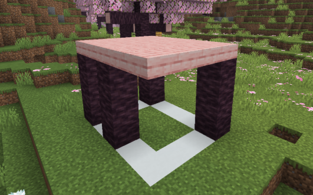
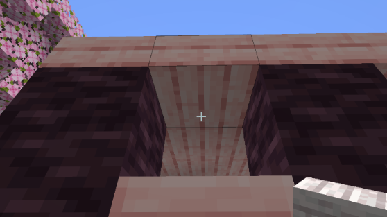
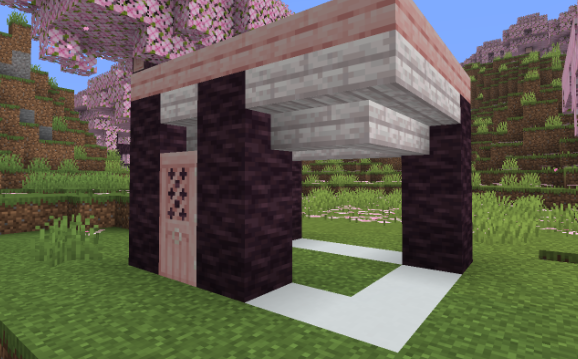
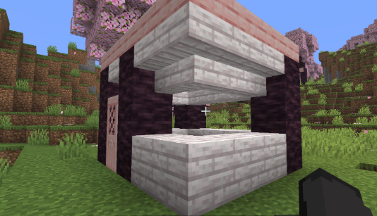
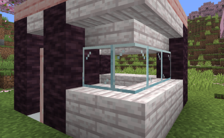
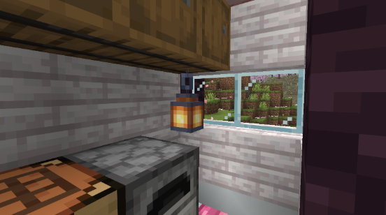
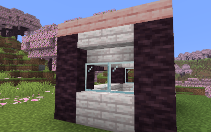
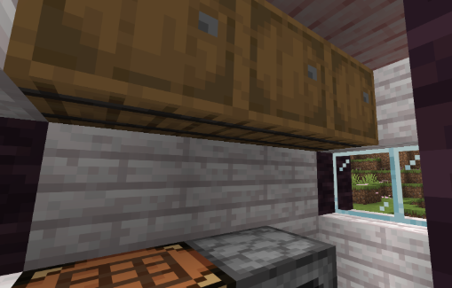

Part 2: Building Your First House
House Guide
This guide will walk you through building a simple, functional starter house that will serve as your initial home in Minecraft.
Materials
To build this house, you will need the materials listed below. This house uses two types of wood: Cherry and Pale Oak. These can be substituted for other types of wood. Likewise, the pink bed can be swapped out for any bed color, and the lantern can be replaced with a torch
Complete Materials List:
- 20x Cherry Slabs
- 12x Cherry Logs
- 12x Pale Oak Planks
- 10x Pale Oak Stairs
- 6x Glass Panes
- 4x Cherry Planks
- 3x Barrels
- 1x Crafting Table
- 1x Furnace
- 1x Cherry Door
- 1x Bed
- 1x Lantern
- 14x Temporary Blocks (See step 2)
Construction
-
Find a 4x5 area of flat ground.

-
Using the layout shown in the image, mark out the foundation. You may use any type of temporary blocks. This step can be skipped if you are comfortable building directly from the layout.
-
On each black square in the layout, vertically place 3x Cherry Logs to form a pillar

-
On top of the pillars, build a 4x5 platform using Cherry Slabs. This will form the roof of the house. This should sit directly above the layout.

-
Between the two pillars that are one block apart, place a Cherry Door. This will be the front of the house.

-
Look at the roof and aim your cursor at the inner side of the block (as shown in the image).

-
Place Pale Oak Stairs around the roof in a full loop, using cursor placement explained in step 6.

-
Place Pale Oak Planks in a loop around the bottom of the house.

-
On the back wall, fill in the remaining gaps with Pale Oak Planks..

-
On the front corner wall, fill in the remaining gaps with Glass Pane.

-
On the left wall, fill in the remaining gaps with Glass Pane.

Finished House
-
Finished House

Furnishing
These instructions assume you are standing inside the house after entering through the front door.
-
Break the six interior floor blocks.

-
Place a Pink Bed on the ground in the far right.
-
Fill in the 2x2 hole on the ground with Cherry Planks.

-
Against the left, back corner, place a Furnace and a Crafting Table.

-
Along the back wall, place a row of three Barrels directly under the roof.

-
Place a Lantern anywhere on the back wall.